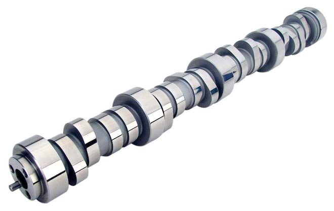

The most important process that happens inside any reciprocating internal combustion engine is the appropriate opening and closing of valves. A valve is a tiny component which lets fuel/air into the cylinder, or lets the exhaust gas escape into the atmosphere. A valve also does the job of creating a fully sealed compartment inside the cylinder for controlled explosions (combustion) as well.
The valves are operated by camshafts. Many modern engines have more than 2 valves per cylinder. The valves should be opened and closed at exact points in time, while the engine is operating. A tiny variation in this timing results in catastrophic engine failures.

Valves are opened and closed at correct times using a mechanism called cams. A cam is just a circular disc which has an off centric shape, mostly resembles the shape of an egg’s cross-section. Depending on the number of valves, a number of cams will be fit into a long rod called the cam-shaft. The angles at which these cams are composed is based on something called a valve timing diagram.
When the cam-shaft rotates over the valves, the cams touches the valve tappets and this lets the valve open. The valves are loaded with high tension springs, which will let the valves go back to its normally closed position when the cam rotates away from the tappet.
As you might have already noticed, the cam-shaft sits on top of the cylinder heads above the valves. Some engine designs allow the cam-shafts to sit on the sides or close to the crank-shaft. Either way, the output rotation that we receive on the crank-shaft has to be transferred to the cam-shaft mechanically. This is very important, because the precision at which both the crank and cams should operate is extremely important. A wrong cam position may open the valve into the cylinder, while the piston is moving up to the TDC. This will result in the piston head hitting the valve head, resulting in either broken valves, or broken piston heads, or even broken connecting roads or crank/cam shafts. The exact result is more or less unpredictable. Most modern cars uses a chain to transfer rotation from the crank-shaft to the cam-shaft, called a timing chain. Some engines uses a rubber based belt instead. Either of them functions more or less the same way.
The above image shows a timing chain connecting the crank-shaft, two cam-shafts and tensioner. Low cost engines sometimes used non rotating tensioners called timing-chain guides, and only one cam-shaft will be connected to the timing-chain, and uses gears internally to transfer rotation from one cam-shaft to the other.
This setup is generally fault-proof. But, as the engine run many thousands of kilometres, the timing chain wears and may slip from the sprockets. This is a huge problem, since a fault timing can cause mechanical failure, and possibly engine overhaul. The highest risk is slipping or snapping of a timing chain. Engine manufacturers in India generally offers upto 100000 kilometres being run without replacing the timing chains. But, this is often a very misinterpreted measure. The timing belt can become loose depending on the way you use your car. For example, a car that is being parked on a gradient with engaged gears regularly can make the timing chain in constant temper, and can become loose much earlier than a car parked with just the parking breaks in neutral gear. Also, some cars uses a rubber belt instead of a metal chain, which wears faster or slips more often than a chain, and needs constant attention. Timing related failures are extremely labour intensive, as the engine block has to be dismantled and lathe work is often involved depending not he type of failure.
Note: This article will have a follow up on specifics of timing configuration.